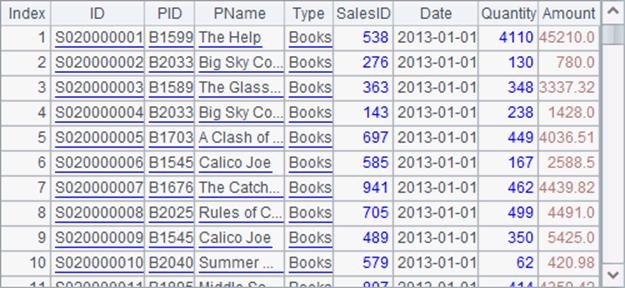

When a cellset program returning a large amount of data through the cursor is invoked to generate a cross-cellset cursor, you can use multiple return statements separately to return multiple results, which then will be concatenated in the main cellset. But a more common way is running a loop to return the large amount of cursor data in batches and the returned results will automatically concatenated when they are being fetched in the main cellset program. D:\files\Order1.dfx is such a cellset file for invocation:
|
|
A |
B |
|
1 |
=file("Order_Books.txt") |
=A1.cursor@t() |
|
2 |
for B1,5000 |
return A2 |
A2 fetches data from the cursor by loop and B2 returns each batch of data as a table sequence using the return statement. This is not the way used in the previous example that the whole table sequence or record sequence is returned at a time. In the main cellset, the cross-cellset cursor works in completely the same way as those in the above:
|
|
A |
|
1 |
=cursor("Order1.dfx") |
|
2 |
=A1.fetch(1000) |
|
3 |
>A1.close() |
The cross-cellset cursor returns huge data. A2 only fetches the first 1,000 records:

Since not all data in the cross-cellset cursor is fetched out, it needs to be closed deliberately in A3. Once the cross-cellset cursor closes, the cursor in the cellset being invoked will close simultaneously.
Cursor data can also be returned as multiple cursors using multiple return statements. In this case data in every cursor will be concatenated together and fetched as a whole. This is the same as the case in which multiple record sequences are returned. So the data in every cursor should have the same data structure.